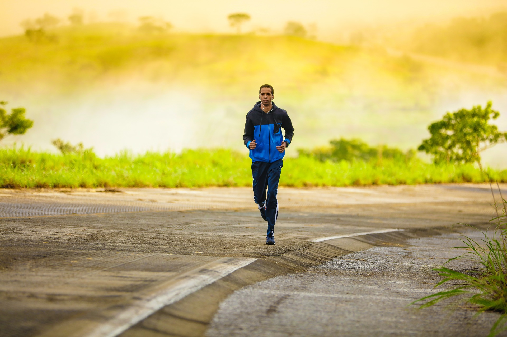
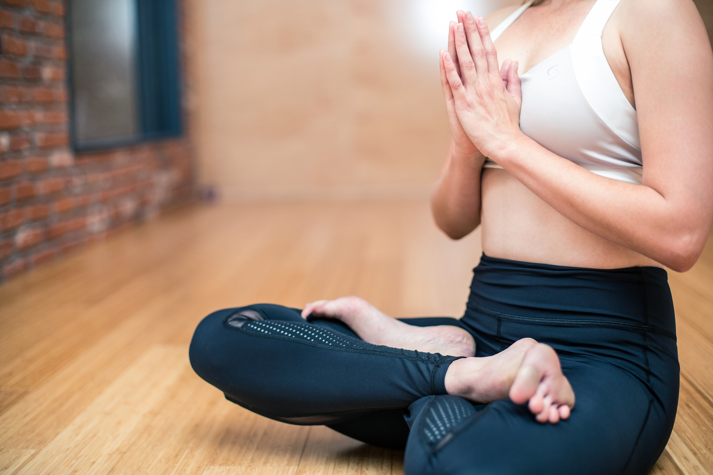

Physical Exercise
Health expects often disagree on matters to do with nutrition and fitness.However,there seems to be a universal
agreement among scientists when it comes to the need for moderate physical activity - if you want to be
healthy,you must exercise regularly.It is true that physical exercise that is right for you depends on
your age and health,nevertheless you need physical exercise to stay in good shape regardless of your age.
Knowing the benefits of physical exercise can give you an incentive.
Importance of Exercise:
Exercising helps you to:
- - Sleep well
- - Stay mobile
- - Maintain strong bones and muscles
- - Maintain or archieve a healthy weight
- - Lower risks of suffering from depression
- - Lower your risk of premature death
- - Boost your immune system
These are just a few examples of the adavantages of exercising,but already you can see the importance of having
physical training.
Light Exercises To keep In Shape

Jogging
Regular running or jogging offers many health benefits. Running can:
help build strong bones
strengthen muscles
improve cardiovascular fitness
burn plenty of kilojoules
help maintain a healthy weight.
Sit-Ups
Sit-ups are a traditional core exercise and they help in:
Core strength
Improved muscle mass
Athletic performance
Better balance and stability
Reduced risk of back pain and injury
Increased flexibility
Diaphragm strengthening

Yoga
Yoga offers physical and mental health benefits including:
Improved strength, balance and flexibility
An ease in arthritis symptoms
Improved back pain relief
Improved cardiovascular fitness
Relaxation of muscles and better sleep
Brighter moods and more energy
Stress management
Simple Squat Workout
How to do a simple body squat
-
1. Start with your feet slightly wider than hip-width.
-
2. Keep your chest up, engage your abdominals.
-
3. Shift your weight onto your heels as you push your hips back into a
sitting position.
-
4. Lower your hips until your thighs are parallel or almost parallel to
the floor.
-
5. You should feel the squat in your thighs and glutes.
-
6. Pause with your knees over, but not beyond, your toes.
-
7. Exhale and push back up to the starting position.
What are the benefits of doing squats?
-
1. Strengthens your core
Having strong core muscles can make everyday movements like turning, bending, and even standing easier. Not
only that, but a strong core can improve your balance, ease pain in your low back, and also make it easier to
maintain good posture.
-
2. Crushes calories
Calorie burning is often equated with aerobic exercises such as running or cycling. But performing
high-intensity, compound movements like the squat can also crush some serious calories.
-
3. Strengthens the muscles of your lower body
Strength training exercises like squats can help strengthen and tone the muscles in your lower body. When
these muscles are in good condition, you may find that you can move more comfortably, with less pain, and that
everything from walking to bending to exercising is easier to do.
-
4. Boosts athletic ability and strength
If you compete in a sport, adding jump squats to your workout may help you develop explosive strength and
speed which, in turn, may help improve your athletic performance.
Disadvantages of not staying physically active
Physical inactiveness gives you high risk of:
- - Suffering from heart diseases
- - Suffering from type 2 diabetes
- - Developing high Blood Pressure
- - Suffering a stroke
VIGOROUS and MODERATE EXERCISES
Others might ask..."How can I tell if an exercise is vigorous?",well, put in simpler terms 'A vigorous
exercise makes it hard for one to hold a conversation while doing it'.Good examples of such exercises
are:basketball,skipping ropes etc.
It is advisable for children and adolescents to have at least an hour of moderate-to-vigorous activity
every day.As for adults,150 minutes of moderate and 75 minutes of vigorous exercise every week is
enough.
"How can you tell if an exercise is moderate?".A moderate exercise makes one sweat.Good examples of such
exercises are: mountain climbing,press-ups etc
TIPS on How to Enjoy Your Exercises!!
-Choose an activity you find fun for your exercise.For
example:basketball,tennis,soccer,brisk walking,cycling,swimming,canoeing,jogging etc
-Find an exercising partner,this will give you an incentive bacause you won't
want to disappoint your partner.
Note.If you're older or have a health probelm and have not been exercising,it is wise to consult a doctor on
how to begin.